<meta charset="utf-8"><title>11/18のコラム note貼り付け</title>
<style>
/* one column of numbered paste steps; text steps vs image steps differ by marker */
:root{--bg:#F5F4F0;--card:#FFFFFF;--ink:#1D2321;--mute:#5F665F;--line:#DCDAD2;--btn:#1F5FBF;--btnok:#2E8B4F;--img:#E9F3EC;--imgink:#22663B;--sans:'IBM Plex Sans JP','Hiragino Sans','Noto Sans JP',sans-serif}
@media (prefers-color-scheme:dark){:root:not([data-theme="light"]){--bg:#171A19;--card:#202423;--ink:#ECEDE8;--mute:#A3AAA2;--line:#343937;--btn:#4D8BE6;--btnok:#3FA866;--img:#1E2C23;--imgink:#8FD3A6;color-scheme:dark}}
:root[data-theme="dark"]{--bg:#171A19;--card:#202423;--ink:#ECEDE8;--mute:#A3AAA2;--line:#343937;--btn:#4D8BE6;--btnok:#3FA866;--img:#1E2C23;--imgink:#8FD3A6;color-scheme:dark}
body{background:var(--bg);color:var(--ink);font-family:var(--sans);font-size:15px;line-height:1.75;padding:20px 16px 60px}
main{max-width:680px;margin:0 auto;display:grid;gap:28px}
header h1{font-size:22px;margin:0 0 6px;text-wrap:balance}
header p{margin:0;color:var(--mute);font-size:14px}
nav{display:flex;gap:8px;flex-wrap:wrap;margin-top:12px}
nav a{border:1px solid var(--line);border-radius:999px;padding:4px 14px;color:var(--ink);text-decoration:none;font-size:14px;background:var(--card)}
.part h2{font-size:18px;line-height:1.5;margin:0 0 12px;text-wrap:balance;display:flex;gap:10px;align-items:baseline;flex-wrap:wrap}
.tag{font-size:13px;background:var(--ink);color:var(--bg);border-radius:6px;padding:1px 9px}
.steps{list-style:none;margin:0;padding:0;display:grid;gap:12px}
.st{background:var(--card);border:1px solid var(--line);border-radius:12px;padding:12px;min-width:0}
.hd{display:flex;align-items:center;gap:8px;margin-bottom:8px}
.no{width:26px;height:26px;border-radius:50%;background:var(--btn);color:#fff;display:inline-flex;align-items:center;justify-content:center;font-size:13px;font-weight:700;flex:0 0 26px}
.im .no{background:var(--btnok)}
.hd em{font-style:normal;font-size:12px;background:var(--img);color:var(--imgink);border-radius:6px;padding:0 8px}
.bx{font-size:13.5px;line-height:1.7;border:1px solid var(--line);border-radius:8px;padding:8px 10px;max-height:110px;overflow:auto;overflow-wrap:anywhere}
.bx.tall{max-height:150px}.bx p{margin:0 0 6px}.bx h2{font-size:14px;margin:8px 0 4px}.bx a{color:var(--btn)}
.st img{display:block;width:100%;max-width:100%;border:1px solid var(--line);border-radius:8px}
.sub{font-size:12.5px;color:var(--mute);margin:6px 0 0}
.cp{width:100%;margin-top:8px;padding:12px;border:0;border-radius:10px;background:var(--btn);color:#fff;font:600 15px var(--sans);cursor:pointer}
.cp.ok{background:var(--btnok)}.cp.dl{background:var(--btnok)}.cp:focus-visible{outline:3px solid var(--ink);outline-offset:2px}
.xh{font-size:15px;margin:20px 0 10px}
.fb{font-size:13px;line-height:1.7;margin:8px 0 0;padding:8px 10px;border-radius:8px;background:var(--img);color:var(--imgink)}
.opts{display:grid;grid-template-columns:repeat(auto-fill,minmax(240px,1fr));gap:10px}
.opt{min-width:0}.opt img{display:block;width:100%;border:1px solid var(--line);border-radius:8px}
.ol{display:flex;align-items:center;gap:8px;margin-top:6px}.ol b{font-size:13px;flex:0 0 auto}.ol .on{font-size:12.5px;color:var(--mute);flex:1;min-width:0}.ol .cp{width:auto;flex:0 0 auto;padding:9px 14px}.ol .cp{margin:0;padding:9px}
.toast{font-size:13px;color:var(--mute);margin-top:6px}
</style>
<main><header><h1>11/18のコラム note貼り付け</h1><p>いま公開済みは7本です。青い番号は文章、緑は画像です。</p><nav><a href="#p1">1</a><a href="#p2">2</a><a href="#p3">3</a><a href="#p4">4</a><a href="#p5">5</a><a href="#p6">6</a><a href="#p7">7</a></nav></header><section class="part" id="p1"><h2><span class="tag">OFF GRID</span>ハミルトン、ラスベガスのFP1を休む　代わるベガノビッチ「毎回が夢」</h2><p class="sub">サイトに公開：12:20</p><ol class="steps">
<li class="st im"><div class="hd"><span class="no">1</span><b>見出し画像</b><em>画像</em></div>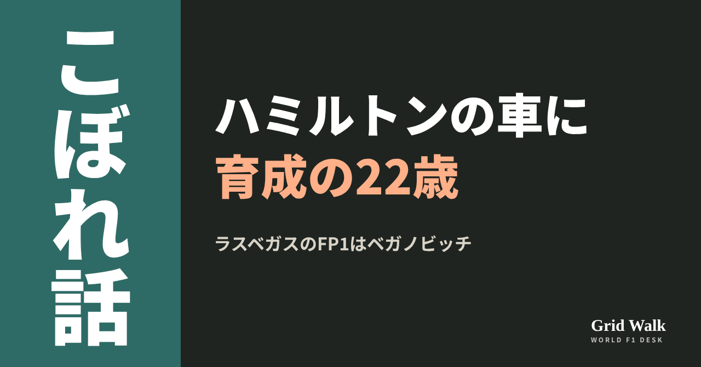<button class="cp dl" data-img="img/hamilton-vegas-fp1-junior-20261118.png" data-name="hamilton-vegas-fp1-junior-20261118_見出し画像.png">ダウンロード</button></li>
<li class="st"><div class="hd"><span class="no">2</span><b>タイトル</b></div><div class="bx" id="p1t">ハミルトン、ラスベガスのFP1を休む　代わるベガノビッチ「毎回が夢」</div><button class="cp" data-plain="p1t">タイトルをコピー</button></li>
<li class="st"><div class="hd"><span class="no">3</span><b>本文</b></div><div class="bx tall" id="p1r"><p>ラスベガスGPの1回目のフリー走行（FP1）で、ルイス・ハミルトンのフェラーリには別の人が乗ります。フェラーリ育成の22歳、ディーノ・ベガノビッチです。イギリスのPlanetF1が11月17日に、フェラーリのプレビューをもとに伝えました。</p><p>ベガノビッチのブラジルのFP1の記事と、ルーキーの金曜走行の決まりの解説はサイトで → <a href="https://f1gridwalk.github.io/lens/hamilton-vegas-fp1-junior-20261118/?utm_source=note&amp;utm_campaign=hamilton-vegas-fp1-junior-20261118">https://f1gridwalk.github.io/lens/hamilton-vegas-fp1-junior-20261118/?utm_source=note&amp;utm_campaign=hamilton-vegas-fp1-junior-20261118</a></p><blockquote><p>「ディーノ・ベガノビッチが、ふたたびSF-26でFP1に出る。今回はルイス・ハミルトンの車だ」（フェラーリのプレビュー、PlanetF1／イギリス）</p></blockquote><p>FP1は現地19日（木）の午後4時30分、日本時間では20日（金）の午前9時30分に始まります。ラスベガスGPは全23戦の第21戦です（F1公式）。ブラジルのGrande Premioによると、ハミルトンはFP2から戻ります。</p><h2>理由は、ルーキーを走らせる決まり</h2><p>F1のチームは、車1台につき年に2大会、フリー走行（FP1かFP2）で、F1の決勝に出たのが2戦以下のルーキーを走らせなければなりません。2台あるので、チーム全体では4回です。細かな中身は、ルールブック https://f1gridwalk.github.io/deep/rules/rookie-fp1/ にまとめています。PlanetF1によると、今回の交代で、フェラーリは今季のルーキー走行の義務を果たします。</p><p>イギリスのFormula Scoutによると、ベガノビッチの今季のFP1はこれが4回目です。Grande Premioによると、6月のバルセロナ・カタルーニャGPではハミルトンの車に、オーストリアGPとサンパウロGPではシャルル・ルクレールの車に乗りました。</p><p>前回のサンパウロでは21番手で、ハミルトンより約2秒遅いタイムでした（PlanetF1）。要約は https://f1gridwalk.github.io/news/en-planetf1-beganovic-replaces-leclerc-brazil-fp1/ にあります。</p><h2>FP1を休んだバルセロナでは優勝</h2><p>ハミルトンは、6月のバルセロナ・カタルーニャGPでもFP1を休みました。PlanetF1によると、ハミルトンはその週末に勝ち、2025年にメルセデスから移ってから、フェラーリで初めての優勝になりました。F1公式の結果では、第7戦の優勝はハミルトン、2位のジョージ・ラッセルとは19.561秒差でした。</p><h2>22歳、初めての市街地コース</h2><p>ベガノビッチはスウェーデン出身で、2020年からフェラーリの育成に入っています。F2ではダムスから出て、ランキング5位、今季2勝です。フェラーリは、2027年から彼をリザーブと開発のドライバーにすると発表しています（Grande Premio／ブラジル）。Formula Scoutは、本人のこんな言葉を伝えています。</p><blockquote><p>「シミュレーターでラスベガスのコースを走ったけど、素晴らしいコースだ」「ルーキーとして、この市街地コースを初めて走るのは、簡単な挑戦ではない」「いつもとても特別だ。特に、チームと近くで働いて、あの赤いスーツを着て、また車に乗り込むのはね。毎回が夢なんだ」（ベガノビッチ、Formula Scout／イギリス）</p></blockquote><p>F1公式の順位表では、サンパウロGPを終えて、フェラーリはコンストラクターズ2位の510点、3位のレッドブルは415点で、差は95点です。ドライバーズでは、ハミルトンが261点で4位、3位のラッセルとは1点差です。ハミルトン自身は、まずコンストラクターズ2位を守ることが先だと話しています（要約は https://f1gridwalk.github.io/news/en-planetf1-hamilton-project-679-second-place/ ）。</p><p>同じFP1でハースがオリバー・ベアマンの車に乗せる平川亮の話は、コラム https://f1gridwalk.github.io/lens/hirakawa-las-vegas-fp1-20261117/ で書いています。</p><p>編集部としては、ハミルトンにとって痛いのは、初日に車を合わせる時間が1回分減ることだと見ています。ラッセルと1点差の中、FP2とFP3でどう取り戻すかが見どころです。</p><p><strong>ランキング争いが大詰めの終盤戦でも、FP1をルーキーに譲る決まりは必要だと思いますか？</strong></p><p>━━━━━━━━━━</p><p><strong>F1 Grid Walk では、世界のF1ニュースを毎日日本語でまとめています。</strong></p><p>海外の記事の要約を、毎日載せています。</p><p><a href="https://f1gridwalk.github.io/">https://f1gridwalk.github.io/</a></p><p>ほかの海外記事も読みたい方は、F1 Grid Walkへ。</p><p><a href="https://f1gridwalk.github.io/lens/hamilton-vegas-fp1-junior-20261118/">https://f1gridwalk.github.io/lens/hamilton-vegas-fp1-junior-20261118/</a></p><p>━━━━━━━━━━</p><p><a href="https://www.planetf1.com/news/lewis-hamilton-ferrari-las-vegas-grand-prix-2026-fp1">出典：PlanetF1（イギリス）</a></p><p><a href="https://formulascout.com/beganovic-gets-another-f1-practice-call-up-with-ferrari-in-las-vegas/141185">出典：Formula Scout（イギリス）</a></p><p><a href="https://grandepremio.com/en/f1/hamilton-to-miss-las-vegas-f1-practice-as-ferrari-confirms-beganovic-replacement/">出典：Grande Premio（ブラジル）</a></p><p><a href="https://www.formula1.com/en/results/2026/team">出典：F1公式サイト（イギリス）</a></p><p><a href="https://www.formula1.com/en/results/2026/drivers">出典：F1公式サイト（イギリス）</a></p><p><a href="https://www.formula1.com/en/results/2026/races/1287/catalunya/race-result">出典：F1公式サイト（イギリス）</a></p><p><a href="https://www.formula1.com/en/racing/2026">出典：F1公式サイト（イギリス）</a></p></div><button class="cp" data-rich="p1r">本文をコピー</button></li>
<li class="st"><div class="hd"><span class="no">4</span><b>ハッシュタグ</b></div><div class="bx" id="p1h">#F1 #F1jp #フェラーリ #ハミルトン #ベガノビッチ #ラスベガスGP #FP1 #F1こぼれ話 #OFFGRID</div><button class="cp" data-plain="p1h">タグをコピー</button></li>
</ol><h3 class="xh">X</h3><ol class="steps">
<li class="st im"><div class="hd"><b>X用の画像</b><em>画像</em></div>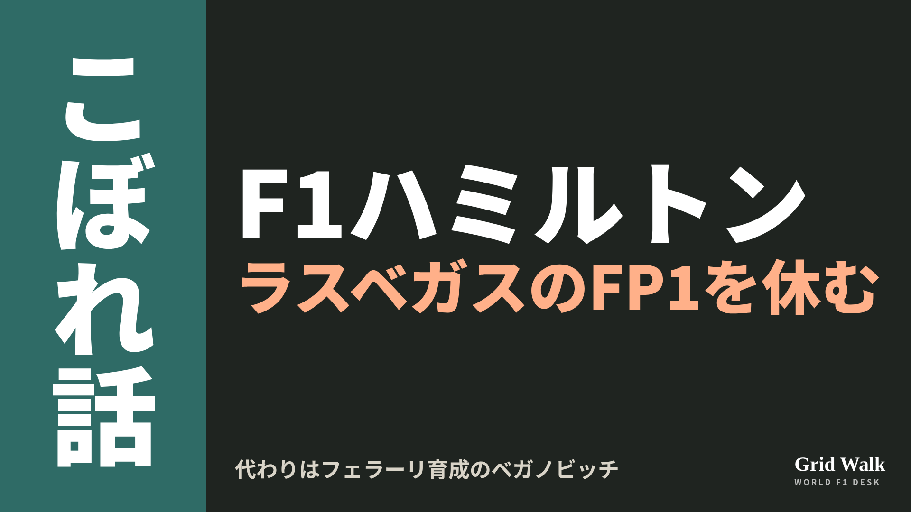<button class="cp dl" data-img="img/x_hamilton-vegas-fp1-junior-20261118.png" data-name="x_hamilton-vegas-fp1-junior-20261118.png">ダウンロード</button></li>
<li class="st"><div class="hd"><b>① noteをシェアするときの文</b></div><div class="bx" id="p1x0">ラスベガスGPのFP1で、ハミルトンのフェラーリにはフェラーリ育成のベガノビッチが乗ります。ルーキーを走らせる決まりのためです。ベガノビッチは「毎回が夢」。noteにまとめました #F1jp #ハミルトン #フェラーリ</div><button class="cp" data-plain="p1x0">コピー</button></li>
<li class="st"><div class="hd"><b>② ①への返信</b></div><div class="bx" id="p1x1">ほかの海外記事も読みたい方は、F1 Grid Walkへ。
https://f1gridwalk.github.io/lens/hamilton-vegas-fp1-junior-20261118/?utm_source=x&amp;utm_campaign=hamilton-vegas-fp1-junior-20261118</div><button class="cp" data-plain="p1x1">コピー</button></li>
<li class="st"><div class="hd"><b>③ ②への返信</b></div><div class="bx" id="p1x2">毎日の海外F1ニュースは、日本語でこちらにまとめています。
https://f1gridwalk.github.io/</div><button class="cp" data-plain="p1x2">コピー</button></li>
</ol></section><section class="part" id="p2"><h2><span class="tag">OFF GRID</span>ルクレールの名のカフェ、ラスベガスに5日間　ハミルトンとノリスの店も</h2><p class="sub">サイトに公開：12:21</p><ol class="steps">
<li class="st im"><div class="hd"><span class="no">1</span><b>見出し画像</b><em>画像</em></div>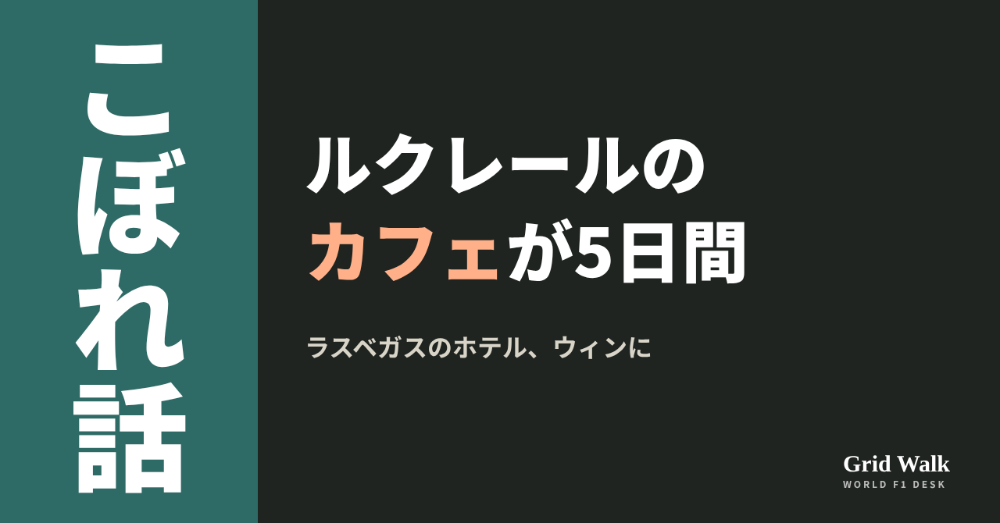<button class="cp dl" data-img="img/leclerc-vegas-cafe-20261118.png" data-name="leclerc-vegas-cafe-20261118_見出し画像.png">ダウンロード</button></li>
<li class="st"><div class="hd"><span class="no">2</span><b>タイトル</b></div><div class="bx" id="p2t">ルクレールの名のカフェ、ラスベガスに5日間　ハミルトンとノリスの店も</div><button class="cp" data-plain="p2t">タイトルをコピー</button></li>
<li class="st"><div class="hd"><span class="no">3</span><b>本文</b></div><div class="bx tall" id="p2r"><p>ラスベガスGPの週、シャルル・ルクレールの名前がついたカフェが、ホテルのウィン・ラスベガスに期間限定で開きます。期間は現地11月18日（水）から22日（日）までの5日間です。Motorsport.com英語版が11月17日に伝え、ウィンも公式サイトのレースウィークのページに載せています。</p><p>元の記事とウィンの案内へのリンクはサイトで → <a href="https://f1gridwalk.github.io/lens/leclerc-vegas-cafe-20261118/?utm_source=note&amp;utm_campaign=leclerc-vegas-cafe-20261118">https://f1gridwalk.github.io/lens/leclerc-vegas-cafe-20261118/?utm_source=note&amp;utm_campaign=leclerc-vegas-cafe-20261118</a></p><p>Motorsport.comの記事は、ラスベガスの情報を発信するインスタグラムの宣伝投稿をもとにしています。店の名前と日付は、ウィンの公式ページにも同じものが載っています。</p><h2>いつもの24時間カフェが5日間だけ衣替え</h2><p>場所は、ウィンの中にあるカフェ・アル・テアトロ（Caffé Al Teatro）です。ウィンのサイトによると、アンコール・シアターの隣にある24時間営業のカフェで、ふだんはエスプレッソや焼き菓子、サンドイッチ、ジェラートなどを出しています。レースウィークのあいだ、ここがカフェ・ルクレール（Café Leclerc）になります。</p><p>ウィンの案内では、限定のグッズと、ルクレールから着想を得たという特製の焼き菓子と飲み物が並ぶと紹介されています。営業時間や値段、メニューの中身は、ウィンの案内にもMotorsport.comの記事にも出ていません。Motorsport.comは、SNSの告知によれば予約なしで立ち寄れる店だとし、VIP向けホスピタリティの値段がとても高いことで知られるラスベガスGPで、気軽に入れるファン向けの場になる、と書いています。</p><p>ただし、ルクレール本人が店に顔を出すとは発表されていません。Motorsport.comは、本人に会いたいファンには、火曜日の夜にルイス・ハミルトンと一緒に出る予定だったプーマの旗艦店のイベント（Under the Lights）のほうが望みがある、と書いていました。</p><h2>ハミルトンとノリスの店も同じホテルに</h2><p>ウィンが前に出しているのは、ルクレールだけではありません。同じ公式ページには、ハミルトンのストリートウェアのブランド+44の店がアンコール・エスプラネードに（18〜22日）、ランド・ノリスのブランドLN4のクラブハウスがアウェイクニング・シアターのロビーに（18〜21日）、それぞれ期間限定で載っています。+44は新しい限定コレクションを、LN4はラスベガス限定のコレクションを売ると案内されています。</p><p>同じページの2025年の振り返りには、去年もハミルトンとノリスの特別な店があったと書かれています。Motorsport.comは、ウィンがドライバー個人のブランドに大きく力を入れている、とまとめています。</p><p>F1公式によると、第21戦ラスベガスGPは現地11月19〜21日です。Motorsport.comによると、コースにはラスベガス・ブールバードを走る1.9kmの直線があります。</p><p>編集部としては、レースの週のホテルが、ドライバーの名前を使った店でファンを呼ぶ場になってきていると見ています。服を売るハミルトンとノリスに対して、ルクレールの店は飲み物と焼き菓子です。予約なしで入れるなら、高いホスピタリティとは別の、気軽なファンの入口になりそうです。</p><p><strong>レースの週にラスベガスにいたら、ドライバーの名前のついたカフェに寄ってみたいですか？</strong></p><p>━━━━━━━━━━</p><p><strong>F1 Grid Walk では、世界のF1ニュースを毎日日本語でまとめています。</strong></p><p>海外の記事の要約を、毎日載せています。</p><p><a href="https://f1gridwalk.github.io/">https://f1gridwalk.github.io/</a></p><p>ほかの海外記事も読みたい方は、F1 Grid Walkへ。</p><p><a href="https://f1gridwalk.github.io/lens/leclerc-vegas-cafe-20261118/">https://f1gridwalk.github.io/lens/leclerc-vegas-cafe-20261118/</a></p><p>━━━━━━━━━━</p><p><a href="https://www.motorsport.com/culture/news/charles-leclerc-is-opening-a-limited-time-cafe-at-wynn-las-vegas-for-race-week/10874997/">出典：Motorsport.com（イギリス）</a></p><p><a href="https://www.wynnlasvegas.com/experiences/f1">出典：ウィン・ラスベガス公式サイト（アメリカ）</a></p><p><a href="https://www.wynnlasvegas.com/dining/casual-dining/caffe-al-teatro">出典：ウィン・ラスベガス公式サイト（アメリカ）</a></p><p><a href="https://www.formula1.com/en/racing/2026">出典：F1公式サイト（イギリス）</a></p></div><button class="cp" data-rich="p2r">本文をコピー</button></li>
<li class="st"><div class="hd"><span class="no">4</span><b>ハッシュタグ</b></div><div class="bx" id="p2h">#F1 #F1jp #ルクレール #フェラーリ #ラスベガスGP #ハミルトン #ノリス #F1こぼれ話 #OFFGRID</div><button class="cp" data-plain="p2h">タグをコピー</button></li>
</ol><h3 class="xh">X</h3><ol class="steps">
<li class="st im"><div class="hd"><b>X用の画像</b><em>画像</em></div>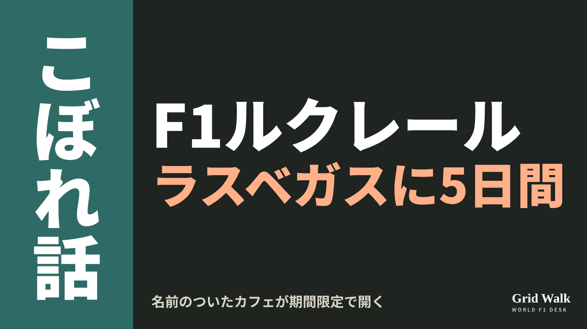<button class="cp dl" data-img="img/x_leclerc-vegas-cafe-20261118.png" data-name="x_leclerc-vegas-cafe-20261118.png">ダウンロード</button></li>
<li class="st"><div class="hd"><b>① noteをシェアするときの文</b></div><div class="bx" id="p2x0">ラスベガスGPの週、ウィン・ラスベガスにルクレールの名前のカフェが期間限定で開きます。現地11月18〜22日の5日間。同じホテルにはハミルトンとノリスのブランドの店も。noteにまとめました #F1jp #ルクレール #ラスベガスGP</div><button class="cp" data-plain="p2x0">コピー</button></li>
<li class="st"><div class="hd"><b>② ①への返信</b></div><div class="bx" id="p2x1">ほかの海外記事も読みたい方は、F1 Grid Walkへ。
https://f1gridwalk.github.io/lens/leclerc-vegas-cafe-20261118/?utm_source=x&amp;utm_campaign=leclerc-vegas-cafe-20261118</div><button class="cp" data-plain="p2x1">コピー</button></li>
<li class="st"><div class="hd"><b>③ ②への返信</b></div><div class="bx" id="p2x2">毎日の海外F1ニュースは、日本語でこちらにまとめています。
https://f1gridwalk.github.io/</div><button class="cp" data-plain="p2x2">コピー</button></li>
</ol></section><section class="part" id="p3"><h2><span class="tag">OFF GRID</span>メルセデス、ADUOのターボはアントネッリ車に　降格なしの見通し</h2><p class="sub">サイトに公開：12:22</p><ol class="steps">
<li class="st im"><div class="hd"><span class="no">1</span><b>見出し画像</b><em>画像</em></div>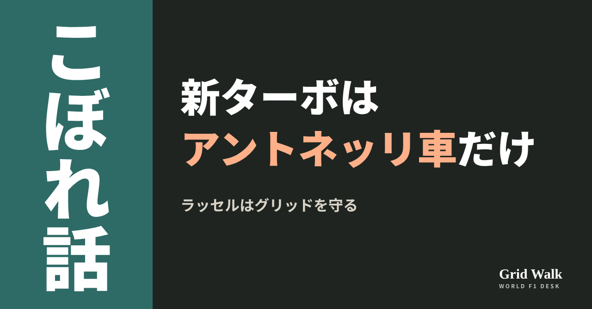<button class="cp dl" data-img="img/mercedes-aduo-turbo-vegas-20261118.png" data-name="mercedes-aduo-turbo-vegas-20261118_見出し画像.png">ダウンロード</button></li>
<li class="st"><div class="hd"><span class="no">2</span><b>タイトル</b></div><div class="bx" id="p3t">メルセデス、ADUOのターボはアントネッリ車に　降格なしの見通し</div><button class="cp" data-plain="p3t">タイトルをコピー</button></li>
<li class="st"><div class="hd"><span class="no">3</span><b>本文</b></div><div class="bx tall" id="p3r"><p>メルセデスが、ADUOで認められた今季分の改良を、ようやく使います。第21戦ラスベガスGPに持ち込むのは、改良したターボ。ただし載せるのは、すでにドライバーズの王座を決めたアンドレア・キミ・アントネッリの車だけの見込みです。イギリスのSky Sportsが11月17日、チームのレース前の展望に出たトト・ウォルフ代表の言葉として伝えました。</p><p>元の記事へのリンクと、ADUOの仕組みの解説への案内はサイトで → <a href="https://f1gridwalk.github.io/lens/mercedes-aduo-turbo-vegas-20261118/?utm_source=note&amp;utm_campaign=mercedes-aduo-turbo-vegas-20261118">https://f1gridwalk.github.io/lens/mercedes-aduo-turbo-vegas-20261118/?utm_source=note&amp;utm_campaign=mercedes-aduo-turbo-vegas-20261118</a></p><blockquote><p>「今週末から、ADUOで可能になったターボの仕様を使えるようになる」「主な目的は、この開発をレースの週末の条件で確かめることで、見込まれる性能の向上は比較的小さい」（ウォルフ、Sky Sports／イギリス）</p></blockquote><p>ADUOは、FIAが各メーカーの内燃エンジン（ICE）の性能を比べ、遅れたメーカーに追加の改良を認める仕組みです（DEEP GRIDの解説 https://f1gridwalk.github.io/deep/aduo-explained/ ）。Sky Sportsによると、6月の1回目の評価で、メルセデスはいちばん良いとされたレッドブルのICEから2〜4%遅れと判定され、改良1回の枠を得て、ここまで使わずに取っておきました。評価の流れは、11月11日のコラム https://f1gridwalk.github.io/lens/aduo-third-review-honda-20261111/ にあります。</p><h2>ラッセルに載せない理由</h2><p>もう一人のジョージ・ラッセルには、新しいターボを載せない見込みです。Sky Sportsによると、ラッセルはこれまでの信頼性の問題で、ターボをすでに5基使っています。許される数より1基多く、6基目を入れると5グリッド降格です。ラッセルはサンパウロGPでも、エンジンの交換で5グリッド下がっていました（11月7日のコラム https://f1gridwalk.github.io/lens/russell-engine-penalty-brazil-20261107/ ）。</p><blockquote><p>「キミの車で使う見込みだ。一方でジョージについては、グリッドの位置を守ることを優先する。性能の向上は、おそらくグリッド降格を受けるに見合うほど大きくない」（ウォルフ、Sky Sports／イギリス）</p></blockquote><h2>アントネッリは降格なし、とGPblog</h2><p>では、アントネッリの車はどうか。Sky Sportsは、アントネッリには降格なしで使えるターボが、今季まだ1基残っていると書いています。GPblogは11月17日、独自の情報として、新しいターボが許される数の最後の1基にあたるため、アントネッリはグリッド降格を受けない見通しだと報じました。記事にメルセデスやFIAの確認は載っておらず、発表されたことではありません。GPblogの記事の要約は https://f1gridwalk.github.io/news/nl-gpblog-antonelli-geen-gridstraf-turbo/ にあります。</p><p>王座が決まったあと、チームが目指すものも変わりました。Sky Sportsによると、メルセデスはコンストラクターズとドライバーズの両方の王座をすでに決めていて、残る目標はラッセルの順位です。F1公式によると、ラッセルは262点でドライバーズ3位。2位のマックス・フェルスタッペン（279点）とは17点差、4位のルイス・ハミルトン（261点）とは1点差です。</p><blockquote><p>「目標ははっきりしている。ジョージがドライバーズ選手権でできるだけ上で終われるよう手助けすることだ」「残りの3戦で、学んで良くなる機会がまだ3回ある」（ウォルフ、Sky Sports／イギリス）</p></blockquote><p>11月14日のコラム https://f1gridwalk.github.io/lens/mercedes-twenty-horsepower-report-20261114/ では、メルセデスがADUOを使わずに上積みしていたかもしれないという伊サイトの報道を紹介しました。今回のターボでどれだけ伸びるのか、チームは数字を出していません。編集部としては、このターボはラスベガスの結果よりも、開発の確かめとしての意味が大きいと見ています。ウォルフ代表自身が、主な目的は確かめることで、向上は比較的小さいと話しているからです。</p><p><strong>ラッセルの順位のために、降格を避けたメルセデス。あなたなら、降格を受けてでもラッセルに新しいターボを載せますか？</strong></p><p>━━━━━━━━━━</p><p><strong>F1 Grid Walk では、世界のF1ニュースを毎日日本語でまとめています。</strong></p><p>海外の記事の要約を、毎日載せています。</p><p><a href="https://f1gridwalk.github.io/">https://f1gridwalk.github.io/</a></p><p>ほかの海外記事も読みたい方は、F1 Grid Walkへ。</p><p><a href="https://f1gridwalk.github.io/lens/mercedes-aduo-turbo-vegas-20261118/">https://f1gridwalk.github.io/lens/mercedes-aduo-turbo-vegas-20261118/</a></p><p>━━━━━━━━━━</p><p><a href="https://www.skysports.com/f1/news/13613272/mercedes-confirm-aduo-turbo-upgrade-ready-for-las-vegas-gp-with-kimi-antonelli-set-to-run-new-engine-part">出典：Sky Sports（イギリス）</a></p><p><a href="https://www.gpblog.com/nl/breaking-news/antonelli-krijgt-geen-gridstraf-in-las-vegas-ondanks-vervangen-motoronderdeel">出典：GPblog（オランダ）</a></p><p><a href="https://www.formula1.com/en/results/2026/drivers">出典：F1公式サイト（イギリス）</a></p><p><a href="https://www.formula1.com/en/racing/2026">出典：F1公式サイト（イギリス）</a></p></div><button class="cp" data-rich="p3r">本文をコピー</button></li>
<li class="st"><div class="hd"><span class="no">4</span><b>ハッシュタグ</b></div><div class="bx" id="p3h">#F1 #F1jp #メルセデス #アントネッリ #ラッセル #ウォルフ #ADUO #ラスベガスGP #F1こぼれ話 #OFFGRID</div><button class="cp" data-plain="p3h">タグをコピー</button></li>
</ol><h3 class="xh">X</h3><ol class="steps">
<li class="st im"><div class="hd"><b>X用の画像</b><em>画像</em></div>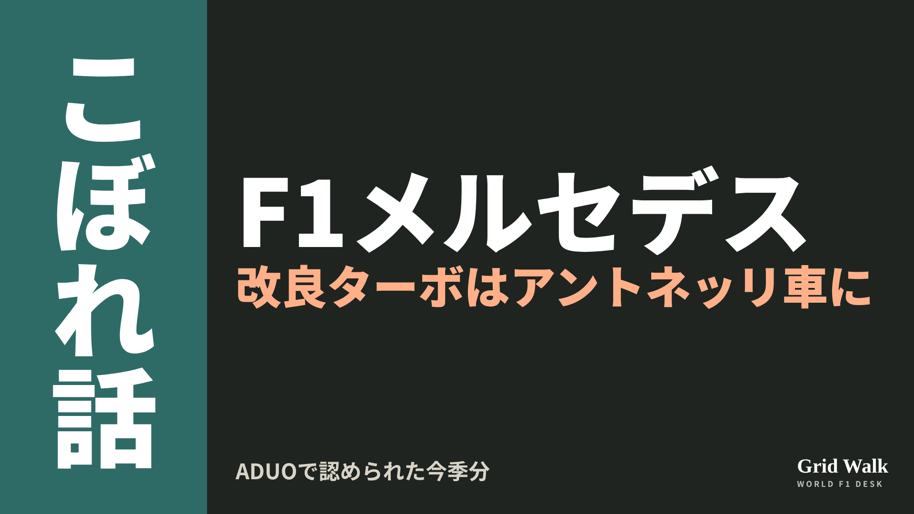<button class="cp dl" data-img="img/x_mercedes-aduo-turbo-vegas-20261118.png" data-name="x_mercedes-aduo-turbo-vegas-20261118.png">ダウンロード</button></li>
<li class="st"><div class="hd"><b>① noteをシェアするときの文</b></div><div class="bx" id="p3x0">メルセデスがADUOの改良ターボをラスベガスGPに持ち込みます。載せるのはアントネッリの車だけの見込みで、オランダのGPblogは降格なしの見通しと報じました。noteにまとめました #F1jp #メルセデス #アントネッリ</div><button class="cp" data-plain="p3x0">コピー</button></li>
<li class="st"><div class="hd"><b>② ①への返信</b></div><div class="bx" id="p3x1">ほかの海外記事も読みたい方は、F1 Grid Walkへ。
https://f1gridwalk.github.io/lens/mercedes-aduo-turbo-vegas-20261118/?utm_source=x&amp;utm_campaign=mercedes-aduo-turbo-vegas-20261118</div><button class="cp" data-plain="p3x1">コピー</button></li>
<li class="st"><div class="hd"><b>③ ②への返信</b></div><div class="bx" id="p3x2">毎日の海外F1ニュースは、日本語でこちらにまとめています。
https://f1gridwalk.github.io/</div><button class="cp" data-plain="p3x2">コピー</button></li>
</ol></section><section class="part" id="p4"><h2><span class="tag">OFF GRID</span>ラスベガスで翼を寝かせる区間は3つ　最長はストリップの1.9km</h2><p class="sub">サイトに公開：12:23</p><ol class="steps">
<li class="st im"><div class="hd"><span class="no">1</span><b>見出し画像</b><em>画像</em></div>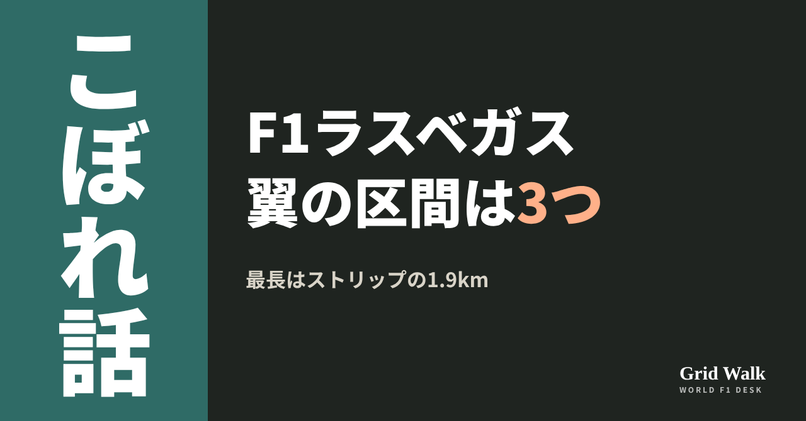<button class="cp dl" data-img="img/fia-vegas-active-aero-20261118.png" data-name="fia-vegas-active-aero-20261118_見出し画像.png">ダウンロード</button></li>
<li class="st"><div class="hd"><span class="no">2</span><b>タイトル</b></div><div class="bx" id="p4t">ラスベガスで翼を寝かせる区間は3つ　最長はストリップの1.9km</div><button class="cp" data-plain="p4t">タイトルをコピー</button></li>
<li class="st"><div class="hd"><span class="no">3</span><b>本文</b></div><div class="bx tall" id="p4r"><p>ラスベガスで翼を寝かせてよい区間は、3つ。FIAが今週末の第21戦ラスベガスGPについて、アクティブエアロのストレートモードを使える区間を決めました。いちばん長いのは、ストリップに沿った1.9kmの直線です。イギリスのPlanetF1が11月17日に伝えています。</p><p>3区間の場所と、区間の決め方の解説へのリンクはサイトで → <a href="https://f1gridwalk.github.io/lens/fia-vegas-active-aero-20261118/?utm_source=note&amp;utm_campaign=fia-vegas-active-aero-20261118">https://f1gridwalk.github.io/lens/fia-vegas-active-aero-20261118/?utm_source=note&amp;utm_campaign=fia-vegas-active-aero-20261118</a></p><p>2026年の車は、走りながら前後の翼の角度を変えられます。コーナーでは翼を立てて車を路面に押しつけ、直線では前後の翼を寝かせて空気抵抗を減らし、最高速を伸ばします。PlanetF1によると、この寝かせた形のストレートモードは、FIAが決めたコース上の区間でしか使えません。仕組みは用語集 https://f1gridwalk.github.io/deep/rules/straight-corner-mode/ に、サイトの要約は https://f1gridwalk.github.io/news/en-planetf1-vegas-straight-mode-zones/ にあります。</p><h2>3区間はどこにあるのか</h2><p>PlanetF1によると、1つ目の区間は4コーナーを過ぎてから始まり、5コーナーの手前で終わります。2つ目がいちばん長く、1.9kmの直線にあります。12コーナーを過ぎてから始まり、13コーナーの小さな折れ曲がりをふくんで、14コーナーのすぐ手前まで続きます。3つ目は16コーナーを過ぎてから、17コーナーまでです。</p><p>つまり2つ目の区間は、まっすぐな道だけではありません。区間が本当の直線とは限らないことや、FIAがどんな物差しで区間を選ぶのかは、DEEP GRID https://f1gridwalk.github.io/deep/straight-mode-zones/ でくわしく書きました。</p><p>追い抜きを助けるオーバーテイクモードの検知点は、16コーナーのすぐ先に置かれます。PlanetF1によると、ここで前の車の1秒以内にいれば、追う車は0.5MJの電気を余分に使えます。翼の区間とは別の仕組みです（ https://f1gridwalk.github.io/deep/rules/overtake-mode/ ）。</p><p>PlanetF1の一覧では、今季いちばん多いのはオーストラリア、ベルギー、シンガポールの5区間で、モナコは0区間。ラスベガスと同じ3区間には、マイアミ、カナダ、メキシコが並びます。ただ、カナダはFIAの地図では4区間でした（DEEP GRIDの表）。</p><p>1周6.201km（F1公式）、コーナー17のこのコースは、シーザーズ・パレス、ベラージオ、ベネチアンの前を通ります（PlanetF1）。F1公式によると、今のコースでの初開催は2023年で、今年が4回目です。</p><h2>初開催のDRSは2つだった</h2><p>2025年までのDRSのころはどうだったのか。FIAのレースディレクターが2023年の大会で出した競技ノート（第3版）でも、DRSの作動区間は2つでした。イギリスのMotorsport Weekによると、4〜5コーナーの間と、ストリップの直線です。</p><p>このときFIAは週末の途中で、ストリップの区間の作動点を、14コーナーの頂点の820m手前から870m手前に動かし、50m長くしました。新しい地図が配られたのは金曜の夕方で、差を測る検知点（12コーナーの710m先）は変えなかったと、Motorsport Weekは伝えています。</p><h2>ストリップで翼を寝かせる距離は長くなる</h2><p>今年の3区間は、2023年のDRSの2区間と同じ場所に、16〜17コーナーの間を足した形です。とくにストリップでは、2023年のDRSが14コーナーの870m手前から使えたのに対し、今年のストレートモードは12コーナーを過ぎてすぐ使えます。</p><p>編集部としては、ストリップで翼を寝かせられる距離が長くなったぶん、13コーナーの折れ曲がりを寝かせたまま通る区間をドライバーがどう感じるかが、金曜の練習走行の見どころの一つになると見ています。FP1は日本時間20日（金）の9時30分、現地では19日の夕方に始まります（F1公式）。</p><p><strong>ラスベガスの3区間。あなたは、もっと増やしてよいと思いますか？ それとも、ちょうどよいと思いますか？</strong></p><p>━━━━━━━━━━</p><p><strong>F1 Grid Walk では、世界のF1ニュースを毎日日本語でまとめています。</strong></p><p>海外の記事の要約を、毎日載せています。</p><p><a href="https://f1gridwalk.github.io/">https://f1gridwalk.github.io/</a></p><p>ほかの海外記事も読みたい方は、F1 Grid Walkへ。</p><p><a href="https://f1gridwalk.github.io/lens/fia-vegas-active-aero-20261118/">https://f1gridwalk.github.io/lens/fia-vegas-active-aero-20261118/</a></p><p>━━━━━━━━━━</p><p><a href="https://www.planetf1.com/news/fia-las-vegas-grand-prix-2026-active-aero">出典：PlanetF1（イギリス）</a></p><p><a href="https://www.fia.com/sites/default/files/decision-document/2023%20Las%20Vegas%20Grand%20Prix%20-%20Race%20Director&#x27;s%20Event%20Notes%20V3.pdf">出典：FIA（国際）</a></p><p><a href="https://www.motorsportweek.com/2023/11/18/fia-extends-drs-zone-along-las-vegas-strip/">出典：Motorsport Week（イギリス）</a></p><p><a href="https://www.formula1.com/en/racing/2026/las_vegas.html">出典：F1公式サイト（イギリス）</a></p></div><button class="cp" data-rich="p4r">本文をコピー</button></li>
<li class="st"><div class="hd"><span class="no">4</span><b>ハッシュタグ</b></div><div class="bx" id="p4h">#F1 #F1jp #ラスベガスGP #FIA #アクティブエアロ #ストレートモード #F1こぼれ話 #OFFGRID</div><button class="cp" data-plain="p4h">タグをコピー</button></li>
</ol><h3 class="xh">X</h3><ol class="steps">
<li class="st im"><div class="hd"><b>X用の画像</b><em>画像</em></div>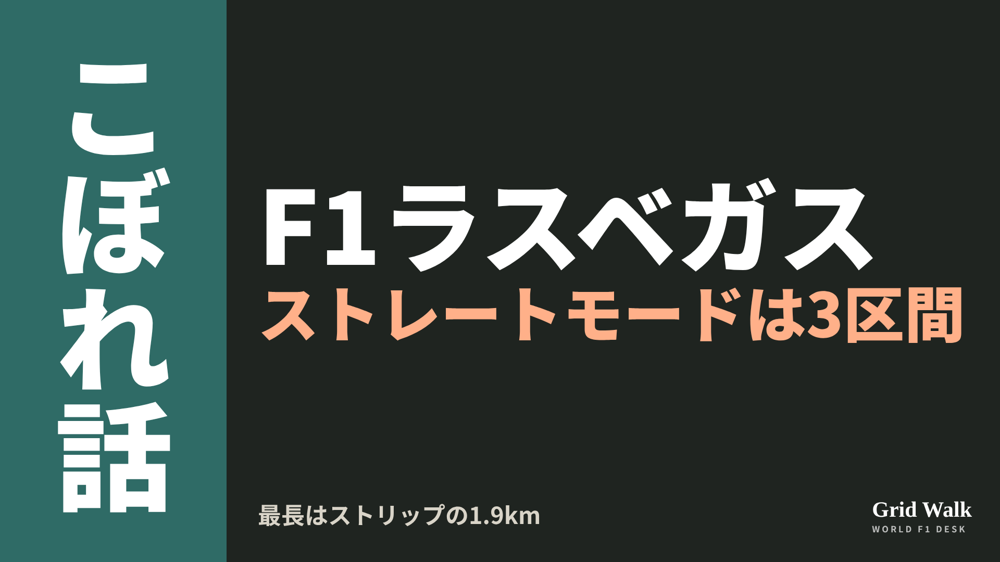<button class="cp dl" data-img="img/x_fia-vegas-active-aero-20261118.png" data-name="x_fia-vegas-active-aero-20261118.png">ダウンロード</button></li>
<li class="st"><div class="hd"><b>① noteをシェアするときの文</b></div><div class="bx" id="p4x0">FIAが、ラスベガスGPでストレートモードを使える区間を3つに決めました。最長は13コーナーの折れ曲がりをふくむ1.9kmの直線。初開催の2023年、DRSの区間は2つでした。noteにまとめました #F1jp #ラスベガスGP</div><button class="cp" data-plain="p4x0">コピー</button></li>
<li class="st"><div class="hd"><b>② ①への返信</b></div><div class="bx" id="p4x1">ほかの海外記事も読みたい方は、F1 Grid Walkへ。
https://f1gridwalk.github.io/lens/fia-vegas-active-aero-20261118/?utm_source=x&amp;utm_campaign=fia-vegas-active-aero-20261118</div><button class="cp" data-plain="p4x1">コピー</button></li>
<li class="st"><div class="hd"><b>③ ②への返信</b></div><div class="bx" id="p4x2">毎日の海外F1ニュースは、日本語でこちらにまとめています。
https://f1gridwalk.github.io/</div><button class="cp" data-plain="p4x2">コピー</button></li>
</ol></section><section class="part" id="p5"><h2><span class="tag">OFF GRID</span>ピアストリの94点差、ブラウンCEOは「まだかみ合っていない」</h2><p class="sub">サイトに公開：12:24</p><ol class="steps">
<li class="st im"><div class="hd"><span class="no">1</span><b>見出し画像</b><em>画像</em></div><button class="cp dl" data-img="img/brown-piastri-norris-gap-20261118.png" data-name="brown-piastri-norris-gap-20261118_見出し画像.png">ダウンロード</button></li>
<li class="st"><div class="hd"><span class="no">2</span><b>タイトル</b></div><div class="bx" id="p5t">ピアストリの94点差、ブラウンCEOは「まだかみ合っていない」</div><button class="cp" data-plain="p5t">タイトルをコピー</button></li>
<li class="st"><div class="hd"><span class="no">3</span><b>本文</b></div><div class="bx tall" id="p5r"><p>今季、ランド・ノリスは3勝、オスカー・ピアストリはまだ勝っていません。F1公式の順位では、ノリスが6位で246点、ピアストリが7位で152点。差は94点です。この差について、マクラーレンのザク・ブラウンCEOが、スカイスポーツの番組F1 Showで理由を2つ挙げました。イギリスのPlanetF1が11月17日に伝えています。</p><p>ブラウンとシュタイナーの発言を伝えた元記事へのリンクと、ピアストリの今季を追った読み解きはサイトで → <a href="https://f1gridwalk.github.io/lens/brown-piastri-norris-gap-20261118/?utm_source=note&amp;utm_campaign=brown-piastri-norris-gap-20261118">https://f1gridwalk.github.io/lens/brown-piastri-norris-gap-20261118/?utm_source=note&amp;utm_campaign=brown-piastri-norris-gap-20261118</a></p><h2>得意だったコーナーで、いまはアクセルを戻す</h2><p>1つ目は、今年からの新しいクルマです。ブラウンはまず、チームメート同士の力関係が入れ替わったと話しました。</p><blockquote><p>「グリッドが少し入れ替わったのを、僕らは見てきたと思う。そうだろう？」（ブラウン、PlanetF1／イギリス）</p></blockquote><p>例に挙げたのは、フェラーリのシャルル・ルクレールとルイス・ハミルトン、メルセデスのジョージ・ラッセルとアンドレア・キミ・アントネッリの組み合わせです。F1公式の順位では、ハミルトン261点・ルクレール249点、アントネッリ390点・ラッセル262点です。そのうえで、ピアストリについてこう続けました。</p><blockquote><p>「オスカーの強みを見ると、大きくて勇気のいるコーナーだったと思う」「それが急に、その大きくて勇気のいるコーナーで、ほら、アクセルを戻せ、ためろ、温存しろ、となった」（ブラウン、PlanetF1／イギリス）</p></blockquote><p>PlanetF1は、規則が変わったことで、ピアストリの高速コーナーでの強みが消されてしまったと書いています。</p><blockquote><p>「新しいクルマに合わせなければならない部分が、少しあると思う」（ブラウン、PlanetF1／イギリス）</p></blockquote><h2>2つ目は、ノリスの好調</h2><blockquote><p>「それに、ランドの功績を割り引くのはやめよう。彼がこれほど良く走るのは見たことがない」（ブラウン、PlanetF1／イギリス）</p></blockquote><p>最高の走りのノリスと、まだクルマに慣れきっていないピアストリ。ブラウンはこうまとめています。</p><blockquote><p>「まだ（クルマと）かみ合っていないオスカー」「それが差だ。でも、大きな差じゃない」（ブラウン、PlanetF1／イギリス）</p></blockquote><h2>シュタイナーは「次のオスカー」に触れた</h2><p>元ハース代表のギュンター・シュタイナーは、もっと厳しい見方です。ドイツのF1-Insiderが11月17日に、ポッドキャストThe Red Flagsでの発言として伝えています。</p><blockquote><p>「来年もまたこんなシーズンを過ごしたら、ザクは次のオスカーを探すだろう」「そのときには、たぶんリアム・ローソンが空いている」（シュタイナー、F1-Insider／ドイツ）</p></blockquote><p>F1-Insiderは、シュタイナーがハースのオリバー・ベアマンも、マクラーレンにとって面白くなりうる若手に挙げたと書いています。ただ、ローソンは2027年もレーシングブルズの席が決まっています。F1-Insiderは、ピアストリがチームを離れたいと考えているという確認はまだないとしています。また、イギリスのPlanetF1は11月15日、シュタイナーが来季のピアストリの席は安泰かと聞かれ、はっきり安泰だと答えたと伝えています。2つの発言の要約は https://f1gridwalk.github.io/news/en-planetf1-brown-piastri-norris-deficit/ と https://f1gridwalk.github.io/news/de-f1insider-steiner-piastri-nachfolger/ にあります。</p><p>編集部としては、2人の話は見出しほど離れていないと見ています。ブラウンは差を大きくないとしながら、クルマに合わせる部分があることは認めています。シュタイナーも、来季の席は安泰かという問いには安泰だと答えており、厳しい話は来年の結果しだいという条件つきです。今季は第21戦ラスベガスGP（現地11月19〜21日）、カタール、アブダビの3戦が残っています。今季の流れは読み解き https://f1gridwalk.github.io/topics/piastri-story-of-my-year/ で。</p><p><strong>ピアストリは来季、ノリスとの差を縮められると思いますか？</strong></p><p>━━━━━━━━━━</p><p><strong>F1 Grid Walk では、世界のF1ニュースを毎日日本語でまとめています。</strong></p><p>海外の記事の要約を、毎日載せています。</p><p><a href="https://f1gridwalk.github.io/">https://f1gridwalk.github.io/</a></p><p>ほかの海外記事も読みたい方は、F1 Grid Walkへ。</p><p><a href="https://f1gridwalk.github.io/lens/brown-piastri-norris-gap-20261118/">https://f1gridwalk.github.io/lens/brown-piastri-norris-gap-20261118/</a></p><p>━━━━━━━━━━</p><p><a href="https://www.planetf1.com/news/mclaren-explains-oscar-piastri-norris-deficit">出典：PlanetF1（イギリス）</a></p><p><a href="https://f1-insider.com/formel-1-piastri-mclaren-aus-steiner-83995/">出典：F1-Insider（ドイツ）</a></p><p><a href="https://www.planetf1.com/news/liam-lawson-mclaren-oscar-piastri-guenther-steiner">出典：PlanetF1（イギリス）</a></p><p><a href="https://www.formula1.com/en/results/2026/drivers">出典：F1公式サイト（イギリス）</a></p><p><a href="https://www.formula1.com/en/racing/2026">出典：F1公式サイト（イギリス）</a></p></div><button class="cp" data-rich="p5r">本文をコピー</button></li>
<li class="st"><div class="hd"><span class="no">4</span><b>ハッシュタグ</b></div><div class="bx" id="p5h">#F1 #F1jp #マクラーレン #ピアストリ #ノリス #ザクブラウン #シュタイナー #ラスベガスGP #F1こぼれ話 #OFFGRID</div><button class="cp" data-plain="p5h">タグをコピー</button></li>
</ol><h3 class="xh">X</h3><ol class="steps">
<li class="st im"><div class="hd"><b>X用の画像</b><em>画像</em></div>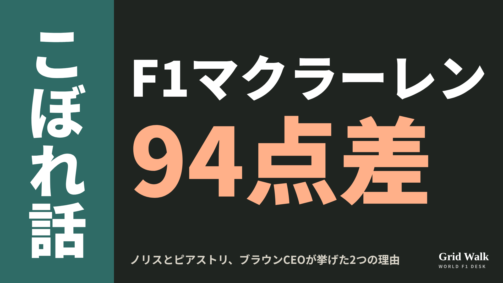<button class="cp dl" data-img="img/x_brown-piastri-norris-gap-20261118.png" data-name="x_brown-piastri-norris-gap-20261118.png">ダウンロード</button></li>
<li class="st"><div class="hd"><b>① noteをシェアするときの文</b></div><div class="bx" id="p5x0">ノリスとピアストリの差は94点。マクラーレンのブラウンCEOは、ピアストリは新しいクルマと「まだかみ合っていない」と話し、差の理由を2つ挙げました。noteにまとめました #F1jp #ピアストリ #マクラーレン</div><button class="cp" data-plain="p5x0">コピー</button></li>
<li class="st"><div class="hd"><b>② ①への返信</b></div><div class="bx" id="p5x1">ほかの海外記事も読みたい方は、F1 Grid Walkへ。
https://f1gridwalk.github.io/lens/brown-piastri-norris-gap-20261118/?utm_source=x&amp;utm_campaign=brown-piastri-norris-gap-20261118</div><button class="cp" data-plain="p5x1">コピー</button></li>
<li class="st"><div class="hd"><b>③ ②への返信</b></div><div class="bx" id="p5x2">毎日の海外F1ニュースは、日本語でこちらにまとめています。
https://f1gridwalk.github.io/</div><button class="cp" data-plain="p5x2">コピー</button></li>
</ol></section><section class="part" id="p6"><h2><span class="tag">OFF GRID</span>カマラの代理人、マルコ時代のレッドブルとは「意味ある対話はほぼ無理」</h2><p class="sub">サイトに公開：12:25</p><ol class="steps">
<li class="st im"><div class="hd"><span class="no">1</span><b>見出し画像</b><em>画像</em></div>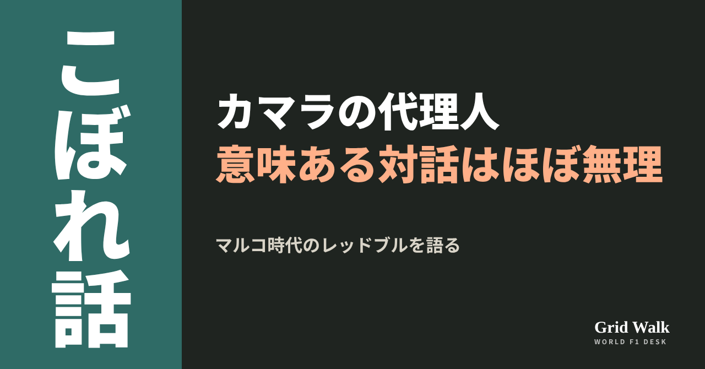<button class="cp dl" data-img="img/camara-agent-marko-20261118.png" data-name="camara-agent-marko-20261118_見出し画像.png">ダウンロード</button></li>
<li class="st"><div class="hd"><span class="no">2</span><b>タイトル</b></div><div class="bx" id="p6t">カマラの代理人、マルコ時代のレッドブルとは「意味ある対話はほぼ無理」</div><button class="cp" data-plain="p6t">タイトルをコピー</button></li>
<li class="st"><div class="hd"><span class="no">3</span><b>本文</b></div><div class="bx tall" id="p6r"><p>ラスベガスGPでもハースから走るラファエル・カマラ。その代理人で、モータースポーツの世界で50年仕事をしてきたエンリコ・ザナリーニが、Motorsport.comのインタビューで、レッドブルとの付き合いを率直に振り返りました。</p><p>元の記事へのリンクと、ドライバーの代理人の仕事の解説はサイトで → <a href="https://f1gridwalk.github.io/lens/camara-agent-marko-20261118/?utm_source=note&amp;utm_campaign=camara-agent-marko-20261118">https://f1gridwalk.github.io/lens/camara-agent-marko-20261118/?utm_source=note&amp;utm_campaign=camara-agent-marko-20261118</a></p><blockquote><p>「レッドブルとは、少なくともヘルムート・マルコが仕切っていた間は、意味のある対話はほぼ無理だった」「マックス・フェルスタッペンのマネージャーでもない限り、相手にもしてもらえなかった」（ザナリーニ、Motorsport.com／イギリス）</p></blockquote><p>Motorsport.comが11月16日に載せた、ザナリーニの50年を振り返る長い記事の一節です。記事によると、仕事の始まりは1975年です。オランダのF1Maximaalも17日にこの発言を取り上げ、ザナリーニを74歳のイタリア人と紹介しました。</p><h2>マルコはもうレッドブルにいない</h2><p>ESPNによると、20年あまりレッドブルに関わり、モータースポーツ顧問を務めてきたマルコは、2025年12月9日、その年の終わりで役目を退くと発表されました。本人が役目を終えたいと願い出たといいます。ザナリーニの言葉は、マルコが仕切っていた間の話です。</p><p>F1Maximaalは、マルコがもう仕切っていない今は様子が違うかもしれない、と書き添えています。一方、Motorsport.comの記事には、今のレッドブルについての言葉は出てきません。</p><h2>フェラーリ、ハース、マクラーレンは</h2><p>ザナリーニは、ほかのチームとの付き合い方の違いも話しています。</p><blockquote><p>「メルセデスもとても権威的なやり方で、マネージャーを脇に置きがちだ」「対照的に、フェラーリはいつも私たちの仕事を尊重してくれた」「ハースとマクラーレンも同じだ」（ザナリーニ、Motorsport.com／イギリス）</p></blockquote><p>記事によると、ザナリーニの会社は今、フェラーリにつながるドライバーを5人担当しています。マクラーレンのザク・ブラウンCEOについては「私ととてもよく似た気質の持ち主だ」と話しました。</p><h2>カマラが来たわけ</h2><blockquote><p>「ラファエルは、フェラーリと長く付き合ってきた経験を求めて、私たちのところに来た」（ザナリーニ、Motorsport.com／イギリス）</p></blockquote><p>カマラに別のマネージャーがいた間は、こちらから追わなかったそうです。ザナリーニはそれを「職業倫理の問題だ。私たちはほかの人の仕事を尊重する」と言います。ブラジルの代理店で商業パートナーのFWDとのつながりも、大事な役目を果たしたと話しています。</p><blockquote><p>「ラファエルは勝利を争うことに慣れている。だから、今は仕事の中身が違うと説明しなければならなかった」（ザナリーニ、Motorsport.com／イギリス）</p></blockquote><p>持って生まれた才能でカマラに近いドライバーを聞かれると、ジャンカルロ・フィジケラの名前を挙げました。ハース公式によると、カマラはラスベガスGPでもオリバー・ベアマンと組み、2回目のグランプリを走ります。</p><p>編集部としては、代理人がチームごとの付き合い方の違いをここまではっきり口にするのは珍しいと見ています。ただ、これは代理人の側の見方で、レッドブルやメルセデスの答えは記事には出ていません。ドライバーの代理人がどんな仕事をするのかは https://f1gridwalk.github.io/deep/rules/driver-manager/ で。</p><p><strong>チームと代理人の相性は、ドライバー選びにどこまで響くと思いますか？</strong></p><p>━━━━━━━━━━</p><p><strong>F1 Grid Walk では、世界のF1ニュースを毎日日本語でまとめています。</strong></p><p>海外の記事の要約を、毎日載せています。</p><p><a href="https://f1gridwalk.github.io/">https://f1gridwalk.github.io/</a></p><p>ほかの海外記事も読みたい方は、F1 Grid Walkへ。</p><p><a href="https://f1gridwalk.github.io/lens/camara-agent-marko-20261118/">https://f1gridwalk.github.io/lens/camara-agent-marko-20261118/</a></p><p>━━━━━━━━━━</p><p><a href="https://www.f1maximaal.nl/formule-1/manager-haalt-fel-uit-met-red-bull-en-marko-onmogelijk-een-zinvolle-dialoog-aan-te-gaan">出典：F1Maximaal（オランダ）</a></p><p><a href="https://www.motorsport.com/f1/news/f1-driver-manager-enrico-zanarini-recounts-his-50-years-in-motorsport/10874697/">出典：Motorsport.com（イギリス）</a></p><p><a href="https://www.espn.com.au/f1/story/_/id/47256109/helmut-marko-steps-red-bull-20-years">出典：ESPN（アメリカ）</a></p><p><a href="https://www.haasf1team.com/news/las-vegas-grand-prix-race-preview-1">出典：ハース公式（アメリカ）</a></p></div><button class="cp" data-rich="p6r">本文をコピー</button></li>
<li class="st"><div class="hd"><span class="no">4</span><b>ハッシュタグ</b></div><div class="bx" id="p6h">#F1 #F1jp #カマラ #ハース #レッドブル #マルコ #ラスベガスGP #F1こぼれ話 #OFFGRID</div><button class="cp" data-plain="p6h">タグをコピー</button></li>
</ol><h3 class="xh">X</h3><ol class="steps">
<li class="st im"><div class="hd"><b>X用の画像</b><em>画像</em></div>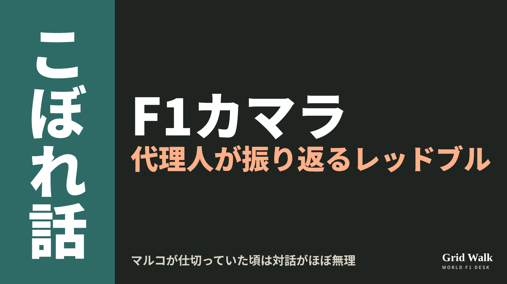<button class="cp dl" data-img="img/x_camara-agent-marko-20261118.png" data-name="x_camara-agent-marko-20261118.png">ダウンロード</button></li>
<li class="st"><div class="hd"><b>① noteをシェアするときの文</b></div><div class="bx" id="p6x0">ハースのカマラの代理人ザナリーニが、マルコが仕切っていた頃のレッドブルとは「意味のある対話はほぼ無理だった」と振り返りました。フェラーリ、ハース、マクラーレンは仕事を尊重してくれたといいます。noteにまとめました #F1jp #カマラ #ハース</div><button class="cp" data-plain="p6x0">コピー</button></li>
<li class="st"><div class="hd"><b>② ①への返信</b></div><div class="bx" id="p6x1">ほかの海外記事も読みたい方は、F1 Grid Walkへ。
https://f1gridwalk.github.io/lens/camara-agent-marko-20261118/?utm_source=x&amp;utm_campaign=camara-agent-marko-20261118</div><button class="cp" data-plain="p6x1">コピー</button></li>
<li class="st"><div class="hd"><b>③ ②への返信</b></div><div class="bx" id="p6x2">毎日の海外F1ニュースは、日本語でこちらにまとめています。
https://f1gridwalk.github.io/</div><button class="cp" data-plain="p6x2">コピー</button></li>
</ol></section><section class="part" id="p7"><h2><span class="tag">OFF GRID</span>エクレストン「ルクレールはフェラーリの男」　ハミルトンには辛口</h2><p class="sub">サイトに公開：12:26</p><ol class="steps">
<li class="st im"><div class="hd"><span class="no">1</span><b>見出し画像</b><em>画像</em></div>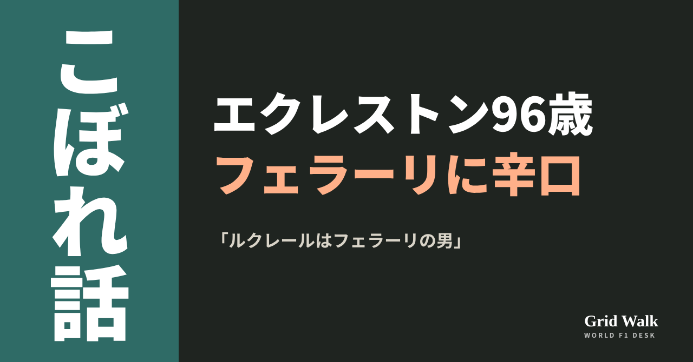<button class="cp dl" data-img="img/ecclestone-leclerc-real-ferrari-20261118.png" data-name="ecclestone-leclerc-real-ferrari-20261118_見出し画像.png">ダウンロード</button></li>
<li class="st"><div class="hd"><span class="no">2</span><b>タイトル</b></div><div class="bx" id="p7t">エクレストン「ルクレールはフェラーリの男」　ハミルトンには辛口</div><button class="cp" data-plain="p7t">タイトルをコピー</button></li>
<li class="st"><div class="hd"><span class="no">3</span><b>本文</b></div><div class="bx tall" id="p7r"><p>F1の元最高経営責任者で96歳のバーニー・エクレストンが、ドイツのRTLとスカイスポーツの独占インタビューで、フェラーリを厳しく評しました。スカイスポーツのドイツ版が11月16日に伝えています。発言は、同社が載せたドイツ語の文から編集部が訳しました。チームメイト2人の評価は、はっきり分かれました。</p><p>メキシコでの2人の争いをまとめたコラムと、バスール代表の今季の読み解きへの案内はサイトで → <a href="https://f1gridwalk.github.io/lens/ecclestone-leclerc-real-ferrari-20261118/?utm_source=note&amp;utm_campaign=ecclestone-leclerc-real-ferrari-20261118">https://f1gridwalk.github.io/lens/ecclestone-leclerc-real-ferrari-20261118/?utm_source=note&amp;utm_campaign=ecclestone-leclerc-real-ferrari-20261118</a></p><blockquote><p>「ルクレールはフェラーリの男だ。ハミルトンのほうは、やって来て、フェラーリの仕事のやり方を変えようとした。1人でそれをやるには、彼にはもう遅い」（エクレストン、RTL／スカイスポーツ〈ドイツ〉）</p></blockquote><h2>最高のクルマがあったのに、という見方</h2><blockquote><p>「フェラーリは今年、世界選手権を勝たなければならなかった」「彼らには最高のクルマがあった」（エクレストン、RTL／スカイスポーツ〈ドイツ〉）</p></blockquote><p>エクレストンが理由として挙げたのは、チームにイタリア人が多すぎることでした。ドイツのMotorsport-Totalによると、それぞれが自分ならもっとうまく回せると思っている、という趣旨です。矛先は、フレデリック・バスール代表にも向きました。</p><blockquote><p>「正直に言うと、彼はいい人だ。でも、フェラーリのようなチームを率いるのは、まったく手に余っている」「フェラーリには、起きてから寝るまでフェラーリのことを考える、とても、とても、とても強い人物が必要だ」（エクレストン、RTL／スカイスポーツ〈ドイツ〉）</p></blockquote><p>Motorsport-Totalは、フェラーリがバスール代表を信頼し、2025年に契約を複数年延ばしたことも書き添えています。</p><h2>ハミルトンには、最初のコーナーの前から</h2><blockquote><p>「レースを始めようとクルマに乗り込むと、もう嘆いていて、最初のコーナーの前から何かに文句を言っている」「彼は今、やめることを考えなければならない年齢に入ってきている」（エクレストン、RTL／スカイスポーツ〈ドイツ〉）</p></blockquote><p>ハミルトンは41歳です（Motorsport-Total）。フェラーリには、はっきりしたナンバー1と、自分の役目を分かったとても有能なナンバー2が要る、というのがエクレストンの考えです。</p><p>もっとも、数字は少し違う絵を見せます。F1公式の順位表では、サンパウロGPを終えて、ハミルトンは261点で4位、ルクレールは249点で5位。今季の点では、ハミルトンが12点上です。本人の言い分は https://f1gridwalk.github.io/lens/hamilton-as-long-as-im-here-20261114/ で、フェラーリの1番手をめぐる議論はコラム https://f1gridwalk.github.io/lens/hill-davidson-ferrari-number-one-20261112/ で読めます。</p><h2>ほめたのはフェルスタッペンとアントネッリ</h2><blockquote><p>「マックス・フェルスタッペンは最高のF1ドライバーだ」「少し上なのではない。ずっと、ずっと上だ」（エクレストン、RTL／スカイスポーツ〈ドイツ〉）</p></blockquote><p>今季、史上最年少の王者になったメルセデスのアンドレア・キミ・アントネッリについては、並外れた才能があると話し、王座の次の年は簡単ではない、とも言っています。フェラーリへ移る日については、笑いながらこう答えました。</p><blockquote><p>「彼が50歳を過ぎるまで、待たないといけない」（エクレストン、RTL／スカイスポーツ〈ドイツ〉）</p></blockquote><p>メルセデスのウォルフ代表の答えは、コラム https://f1gridwalk.github.io/lens/antonelli-ferrari-zero-percent-20261117/ にあります。</p><p>編集部としては、エクレストンの言葉は、順位表の数字より、チームとの相性の話だと見ています。最高のクルマがあったという見立ても、バスール代表自身の今季の振り返りとはだいぶ違います。代表の言葉は読み解き https://f1gridwalk.github.io/topics/vasseur-from-the-first-straight-line/ で、メキシコでの2人の争いはコラム https://f1gridwalk.github.io/lens/hamilton-leclerc-rift-20261107/ で。2人はこの週末、第21戦ラスベガスGP（現地11月19〜21日）に臨みます。</p><p><strong>チームに根づいたルクレールと、チームを変えようとしたハミルトン。来季のフェラーリに必要なのは、どちらの形だと思いますか？</strong></p><p>━━━━━━━━━━</p><p><strong>F1 Grid Walk では、世界のF1ニュースを毎日日本語でまとめています。</strong></p><p>海外の記事の要約を、毎日載せています。</p><p><a href="https://f1gridwalk.github.io/">https://f1gridwalk.github.io/</a></p><p>ほかの海外記事も読みたい方は、F1 Grid Walkへ。</p><p><a href="https://f1gridwalk.github.io/lens/ecclestone-leclerc-real-ferrari-20261118/">https://f1gridwalk.github.io/lens/ecclestone-leclerc-real-ferrari-20261118/</a></p><p>━━━━━━━━━━</p><p><a href="https://sport.sky.de/formel-1/artikel/ex-formel-1-boss-bernie-ecclestone-bei-rtl-sky-sport-ueber-ferrari-hamilton-und-antonelli/13612828/35311">出典：Sky Sport（ドイツ）</a></p><p><a href="https://www.motorsport-total.com/formel-1/news/scharfe-kritik-frederic-vasseur-ist-bei-ferrari-schlichtweg-ueberfordert-26111706">出典：Motorsport-Total.com（ドイツ）</a></p><p><a href="https://www.formula1.com/en/results/2026/drivers">出典：F1公式サイト（イギリス）</a></p><p><a href="https://www.formula1.com/en/racing/2026">出典：F1公式サイト（イギリス）</a></p></div><button class="cp" data-rich="p7r">本文をコピー</button></li>
<li class="st"><div class="hd"><span class="no">4</span><b>ハッシュタグ</b></div><div class="bx" id="p7h">#F1 #F1jp #フェラーリ #エクレストン #ハミルトン #ルクレール #バスール #ラスベガスGP #F1こぼれ話 #OFFGRID</div><button class="cp" data-plain="p7h">タグをコピー</button></li>
</ol><h3 class="xh">X</h3><ol class="steps">
<li class="st im"><div class="hd"><b>X用の画像</b><em>画像</em></div>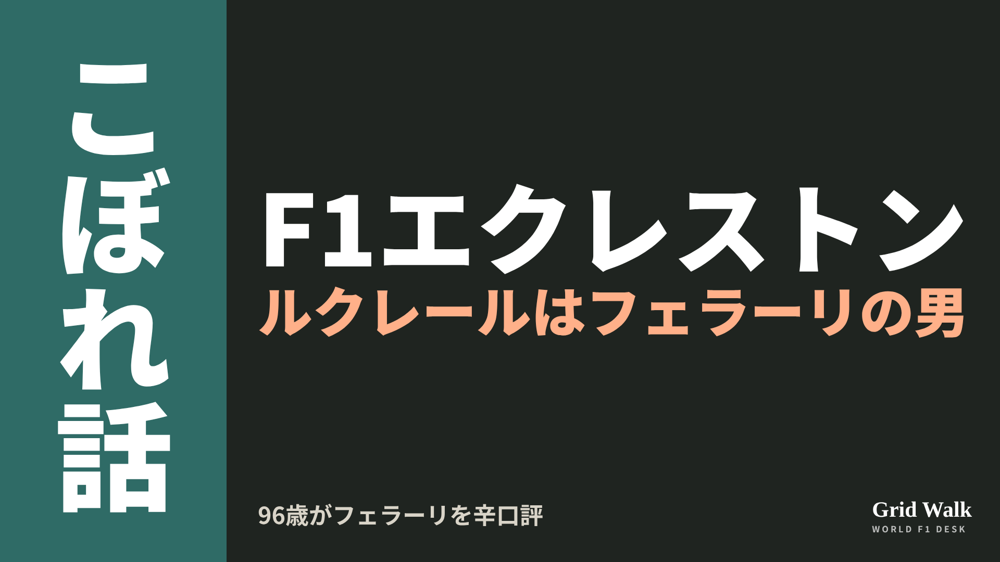<button class="cp dl" data-img="img/x_ecclestone-leclerc-real-ferrari-20261118.png" data-name="x_ecclestone-leclerc-real-ferrari-20261118.png">ダウンロード</button></li>
<li class="st"><div class="hd"><b>① noteをシェアするときの文</b></div><div class="bx" id="p7x0">96歳のエクレストンが、ドイツのRTLとスカイスポーツのインタビューで「ルクレールはフェラーリの男」。ハミルトンには、引退を考えなければならない年齢だと話しました。noteにまとめました #F1jp #ルクレール #エクレストン</div><button class="cp" data-plain="p7x0">コピー</button></li>
<li class="st"><div class="hd"><b>② ①への返信</b></div><div class="bx" id="p7x1">ほかの海外記事も読みたい方は、F1 Grid Walkへ。
https://f1gridwalk.github.io/lens/ecclestone-leclerc-real-ferrari-20261118/?utm_source=x&amp;utm_campaign=ecclestone-leclerc-real-ferrari-20261118</div><button class="cp" data-plain="p7x1">コピー</button></li>
<li class="st"><div class="hd"><b>③ ②への返信</b></div><div class="bx" id="p7x2">毎日の海外F1ニュースは、日本語でこちらにまとめています。
https://f1gridwalk.github.io/</div><button class="cp" data-plain="p7x2">コピー</button></li>
</ol></section></main><script>
function done(b,msg){const t=b.dataset.t||b.textContent;b.dataset.t=t;b.classList.add('ok');b.textContent=msg||'コピーしました';setTimeout(()=>{b.classList.remove('ok');b.textContent=t},2000)}
function selectEl(el){const r=document.createRange();r.selectNodeContents(el);const s=getSelection();s.removeAllRanges();s.addRange(r)}
async function rich(el,b){
  try{await navigator.clipboard.write([new ClipboardItem({'text/html':new Blob([el.innerHTML],{type:'text/html'}),'text/plain':new Blob([el.innerText],{type:'text/plain'})})]);done(b);return}catch(e){}
  selectEl(el);let ok=false;try{ok=document.execCommand('copy')}catch(e){}
  if(ok){getSelection().removeAllRanges();done(b)}else{done(b,'選択しました。コピーしてください')}}
async function plain(el,b){
  try{await navigator.clipboard.writeText(el.innerText);done(b);return}catch(e){}
  selectEl(el);let ok=false;try{ok=document.execCommand('copy')}catch(e){}
  if(ok){getSelection().removeAllRanges();done(b)}else{done(b,'選択しました。コピーしてください')}}
let dlns=null;(async()=>{try{dlns=await window.claude?.use?.("downloads")}catch(e){dlns=null}})();
async function img(src,b){
  b.dataset.t=b.dataset.t||b.textContent;
  if(!dlns){try{dlns=await window.claude?.use?.("downloads")}catch(e){}}
  if(!dlns){b.textContent='ダウンロードできませんでした';setTimeout(()=>{b.textContent=b.dataset.t},3500);return}
  try{const blob=await fetch(src).then(r=>r.blob());b.textContent='保存の確認を開いています…';
    await dlns.save({filename:b.dataset.name,data:blob});done(b,'ダウンロードしました')}
  catch(e){const c=e&&e.code;b.textContent=c==='declined'?'キャンセルしました':c==='rate_limited'?'少し待ってからもう一度押してください':'ダウンロードできませんでした';setTimeout(()=>{b.textContent=b.dataset.t},3500)}}
document.querySelectorAll('.cp').forEach(b=>b.addEventListener('click',()=>{
  if(b.dataset.rich)rich(document.getElementById(b.dataset.rich),b);
  else if(b.dataset.plain)plain(document.getElementById(b.dataset.plain),b);
  else img(b.dataset.img,b)}));
</script>